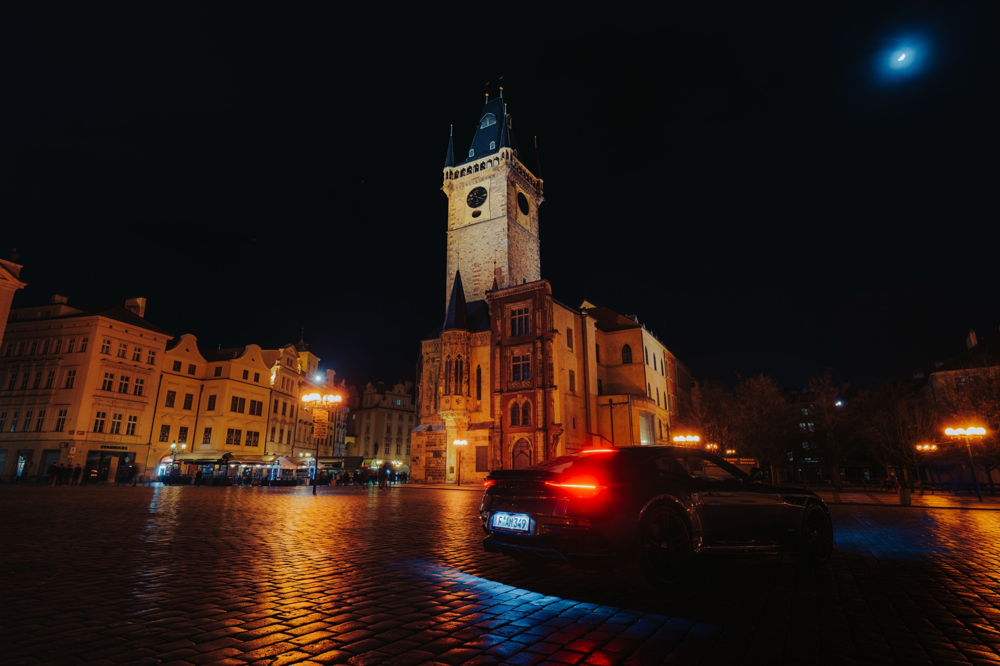
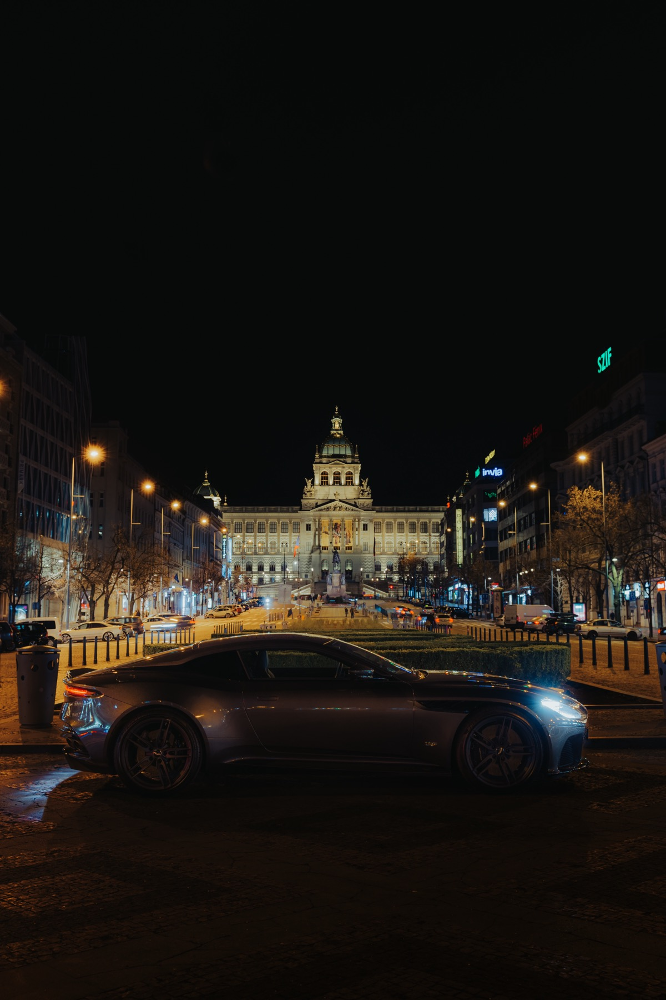
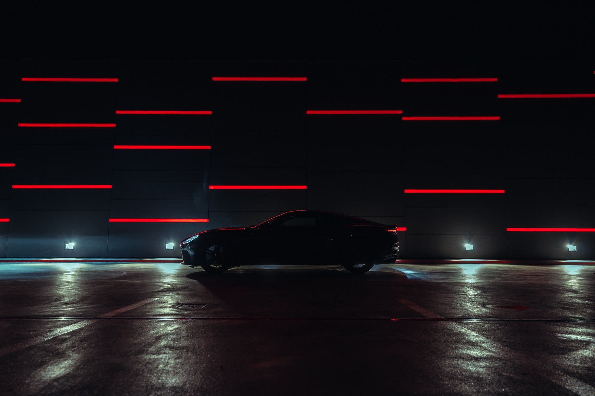
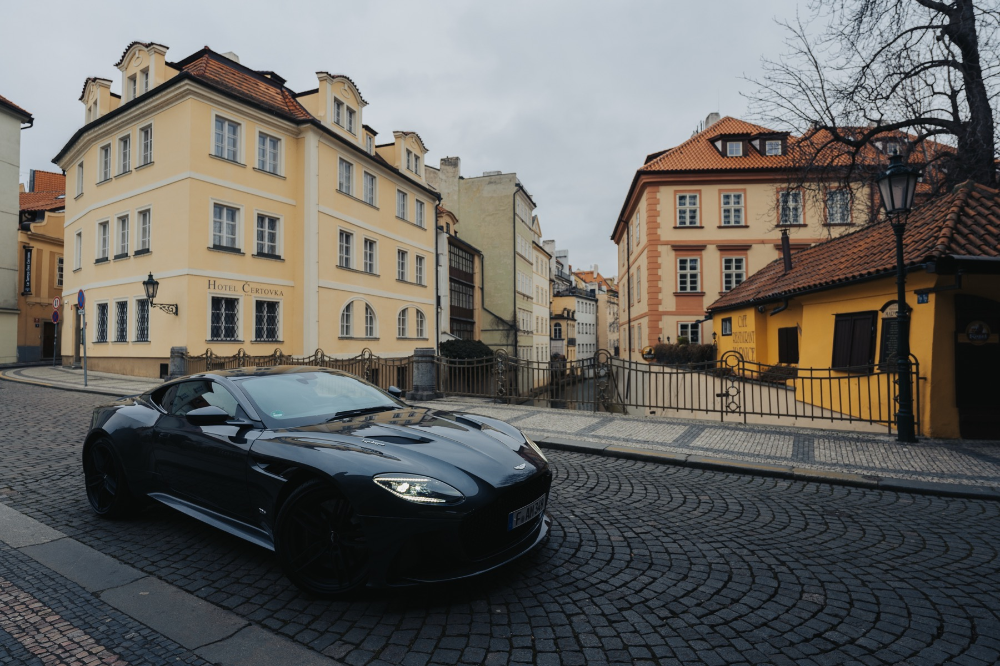
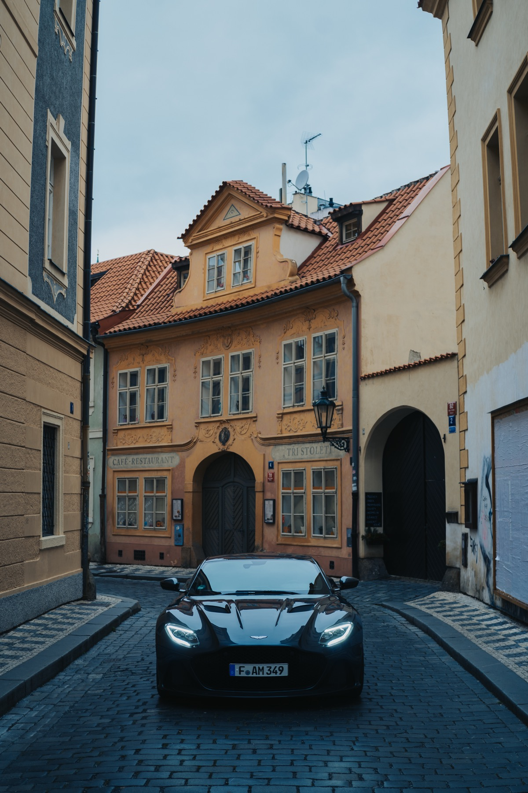
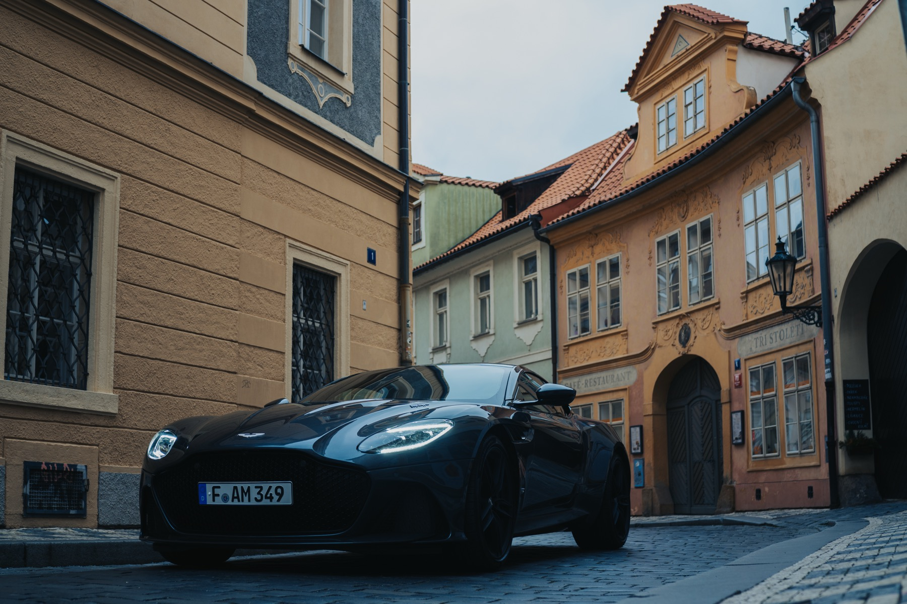
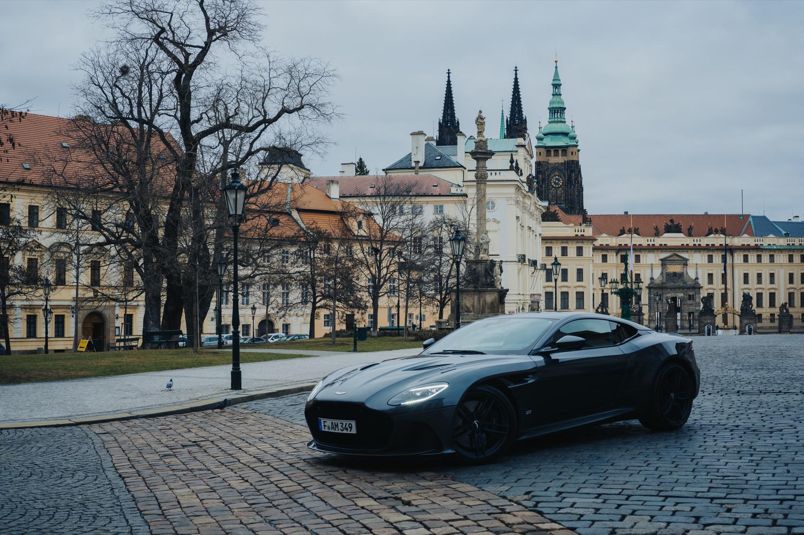
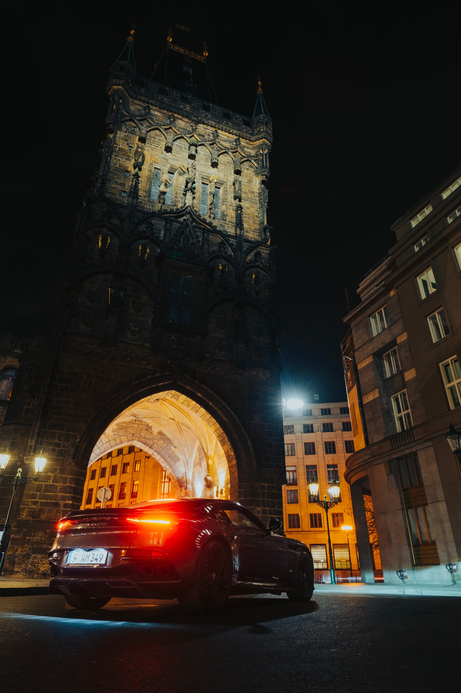

Client · Automotive
A night shoot with an Aston Martin in Prague's Old Town Square, built for brand press and editorial coverage around the Aston Martin / Peroni partnership. Prague, winter 2021.
Aston Martin contacted Francesco directly through social media while he was based in Prague. The goal was photography that could support business press and editorial coverage around the Aston Martin / Peroni collaboration — Peroni Libera 0.0% and Aston Martin's Formula One team announced a multi-year partnership in February 2021. Francesco worked independently on a three-day assignment, with a driver operating the car for the shoot.
Winter light in Prague is flat and even, with no additional artificial lighting used in the public locations. The approach stayed deliberately simple: architectural, scenic, clean — letting the car and the city's own architecture carry the image rather than a heavily art-directed set.








For automotive and brand campaigns that need clean, architectural photography built around the car itself.
Start a project